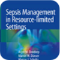
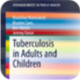
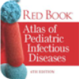
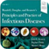

The best selection of constantly updated, Health Sciences focused,
cross-referenced eContent. Featuring thousands of resources from
the leading health sciences publishers—and growing every day.
Start a free 30-day trial
Watch a quick demo of the R2 Digital Library in action
You'll see how the new version of the R2 Digital Library
is a powerful eBook solution for your institution.
Recently added

Sepsis Management in Resource-limited Settings

Tuberculosis in Adults and Children

Red Book Atlas of Pediatric Infectious Diseases

Mandell, Douglas, and Bennett's Principles and Practice of…
Sepsis Management in Resource-limited Settings
Tuberculosis in Adults and Children
Red Book Atlas of Pediatric Infectious Diseases
Expand Your Library Beyond eBooks...
The R2 Digital Library is a web based database available
from Rittenhouse Book Distributors. It offers fully integrated
and searchable medical, nursing and allied health source book content
from key health science publishers, on a web based platform.
See full list of titles
Connect your users with essential health sciences content from
the leading publishers - on a platform designed to enhance it
Select resources at the title level and pay once for life of edition access
Explore consortia, patron driven Acquisition and turnkey collection development solutions
Incorporate workflow, integration and collaboration tools designed for the contemporary library
Most popular
Sepsis Management in Resource-limited Settings
Tuberculosis in Adults and Children
Red Book Atlas of Pediatric Infectious Diseases
Mandell, Douglas, and Bennett's Principles and Practice of…
Sepsis Management in Resource-limited Settings
Tuberculosis in Adults and Children
Red Book Atlas of Pediatric Infectious Diseases
Featured publisher
Health Administration Press
See full list of titles
Benefits of eContent and the R2 Digital Library
If you’ve been thinking of including digital content into
your library collection, but haven’t yet made the switch,
here are answers to some very common questions about the benefits
of using eContent and the R2 Digital Library as your platform.
visit our help section
Does the R2 Library have the Titles I need?
We have thousands of resources from the leading health sciences
publishers, so chances are, the answer is yes. To be sure,
use the search function at the top of the page to access
a listing of active R2 titles.